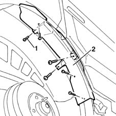
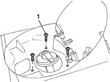
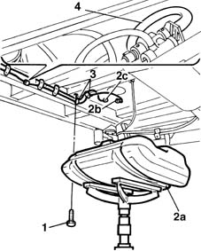

1040B54 fuel line from manifolds - r r
- Path
- Procedures > 10 ENGINE UNIT > 1040 FUEL TANK AND PIPES > 1040B FUEL SUPPLY/RETURN CIRCUIT PIPE > 1040B54 fuel line from manifolds - r r
- Kind
- repair procedure (removal / refitting; the operation number is the code)
- Applies to
- engines: 1.9 JTD 8V; all production periods
- Interactive page
- https://sloeber94.github.io/elrnDB-fMltpl/en/#/2891381
Applies to: engines: 1.9 JTD 8V; all production periods
 Removing
Removing
 Refitting
Refitting4450B11 WHEEL (one) rear - R.R.
1016A10 sound-proofing cover - r + r
Raise the car.
1. Undo the retaining bolts.
2. Remove the plastic fuel filler pipe protection.

Applies to: engines: 1.9 JTD 8V; all production periods
1. Unscrew the fuel filler fitting retaining bolts.

Applies to: engines: 1.9 JTD 8V; all production periods
1. Undo the retaining bolts.
2. Using a stand, lower tank (2a) to gain access to quick-release fitting (2a) on the outlet line and pipe (2c) on the fuel pump.
3. Release the outlet line from the collars on the tank and body.
4. Disconnect the pipe from the return manifold, then remove.

Applies to: engines: 1.9 JTD 8V; all production periods
Refitting
RemovingLay the pipe in the engine bay and connect to the fittings on the body.
Connect the pipe to the return manifold.
Connect the quick-release fitting on the outlet line to the pump.
Connect the quick-release fitting on the inlet line to the pump.
Secure the fuel line to the tank and body using collars.
Raise the tank and tighten the retaining bolts to torque.
 | Fastening | Component | Ø | Value (daNm) |
|---|---|---|---|---|
- | Bolt | FUEL TANK | M8 | 3.5 |
Lower the vehicle.
Tighten the bolts securing the filler fitting to the body to torque.
| Fastening | Component | Ø | Value (daNm) |
|---|---|---|---|---|
- | Bolt | FUEL FILLER PIPE | M5 | 0.35 |
| Fastening | Component | Ø | Value (daNm) |
|---|---|---|---|---|
- | Bolt | FUEL FILLER PIPE | M6 | 0.8 |